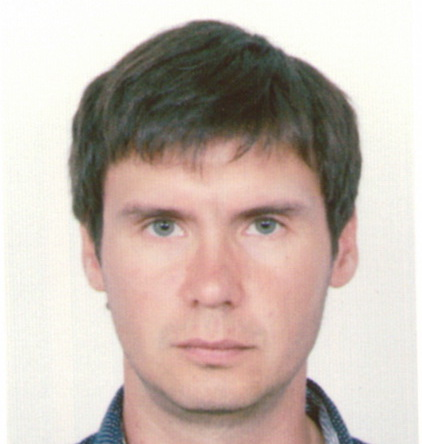
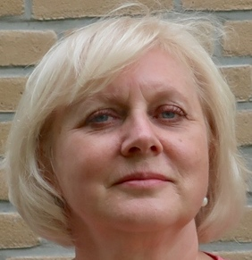
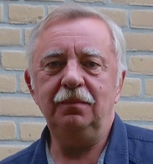
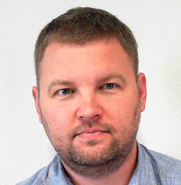

About RCS
Russian scientific school that studies application of mathematical methods in
chemistry has been existing for many years. The achievements of academicians
Semenov
and Zeldovich turned to be its basis. The main activity of scientists
that belong to the school is mainly connected with the description of the
kinetics of chemical processes.
Regular conferences "Mathematical methods in chemistry" were held in the Soviet
Union. In spite of that, such activities were not connected with a term "Chemometrics"
as a name of some special field of knowledge. Only in 90-s it was found out
that everything we had been doing was called Chemometrics.
By that time, status of Chemometrics in Russia was unsatisfactory. It was not accepted
as a scientific discipline by the Russian Academy of Science and the novel methods in
Chemometrics were hardly accessible for Russian scientists. To change this situation a
group of scientists from the Institute of Chemical Physics, Moscow State University,
and some other research centres in Moscow (about 25 persons) met together in October
1997 and decided to establish the Russian Chemometrics Society (RCS) as a non-profit
scientific association.
The main goals of RCS are:
- to develop and popularize Chemometrics among Russian scientists
- to support research in Chemometrics
- to carry out scientific seminars and conferences
- to organize educational courses on Chemometrics
Since 2002 RCS organizes Winter Symposium
on Chemometrics (former Winter School on Chemometrics) — biannual international
conference that brings together chemometricians from different countries.
RCS committee
-

Chair
Dmitry Kirsanov
Professor
SPbSU
-

Oxana Rodionova
Leading researcher
ICP RAS
-

Alexey Pomerantsev
Principal researcher
ICP RAS
-

Sergey Kucheryavskiy
Associate professor
Aalborg University